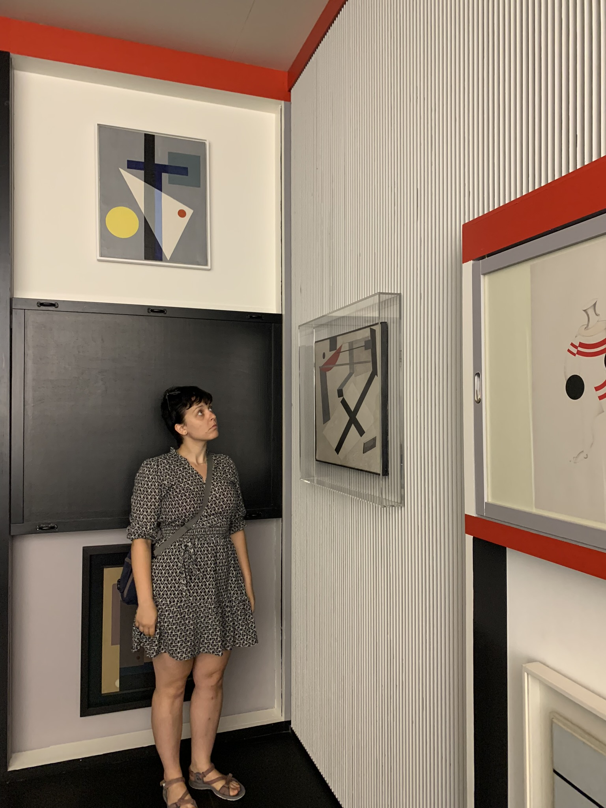

About me
Hi! I'm Julia.
A data and information generalist with 15 years of experience across the private (software development, financial services, energy) and public sectors. I've worked in a range of software and data roles: DWH/data engineer, data and information modeller, BI analyst, implementation consultant, automation engineer, and exploratory tester.
More recently, I've grown interested in data and investigative journalism, focusing on the defence and security sector, particularly Russian-linked influence operations across the post-Soviet space and beyond.
This site is my personal space to capture and share whatever I feel like.
Other places you can find me online:
- GitHub, where there could have been much more code :D;
- Goodreads, where I track what I read;
- ICheckMovies, where I find what to watch;
- LinkedIn, where I look for jobs and keep up with the hype of the moment.
Радості, Радости, Joy, Alegría, Vreugde, 快乐,
Juul
